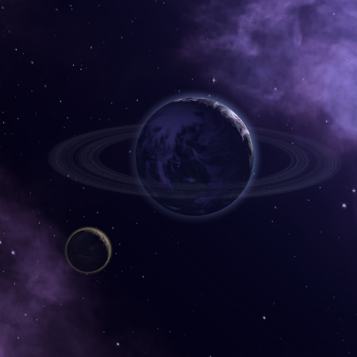

Distant Origin

Type
Author(s)
Status
Forum
Steam workshop
Distant Origin is a mod that expands on the Lost Colony and Remnant origins, and adds several more as well. Players can play as a race of refugees exiled by an invading alien race, desperate to retake their homeworld at all costs. Or they can play as the homeworld itself in the expanded Remnants origin, searching the universe for their own lost colonies scattered throughout the galaxy. There are a lot of possibilities, and virtually all of them should be compatible with most mods since no significant vanilla files are touched.
Overview
New Features
- If you have the
 Lost Colony,
Lost Colony,  Shattered Ring,
Shattered Ring,  Void Dwellers, or
Void Dwellers, or  Calamitous Birth origins (or one of the modded ones listed under Compatibility below), a solar system will be spawned somewhere in the galaxy containing your species' true homeworld. Exactly what you'll find there is a mystery, but locating it and potentially moving back in will yield rewards. This is similar to how Lost Colony already works in vanilla, but with more possibilities in how your homeworld fared after you left.
Calamitous Birth origins (or one of the modded ones listed under Compatibility below), a solar system will be spawned somewhere in the galaxy containing your species' true homeworld. Exactly what you'll find there is a mystery, but locating it and potentially moving back in will yield rewards. This is similar to how Lost Colony already works in vanilla, but with more possibilities in how your homeworld fared after you left. - If you have the
 Interstellar Exiles origin, a backstory is created in which your population was forcibly expelled from your homeworld by an invading force, and eventually re-settled on a distant world. Combining this with the new Vengeful Refugees civic creates an event chain aimed at re-conquering that lost homeworld. The game will generate an appropriate
Interstellar Exiles origin, a backstory is created in which your population was forcibly expelled from your homeworld by an invading force, and eventually re-settled on a distant world. Combining this with the new Vengeful Refugees civic creates an event chain aimed at re-conquering that lost homeworld. The game will generate an appropriate  Contested Capital empire, or you can create your own in the empire creator and force-spawn it.
Contested Capital empire, or you can create your own in the empire creator and force-spawn it. - If you have the Contested Capital origin, a backstory is created in which your civilization fought a global war over your homeworld, ultimately winning control of it and forcing the losers into exile among the stars. Those exiles have rebuilt their civilization on another world but have not forgotten their origin and your role in banishing them. The game will generate an appropriate Interstellar Exiles empire, or you can create your own in the empire creator and force-spawn it.
- If you have the
 Remnants origin (and are not a
Remnants origin (and are not a  Gestalt Consciousness), up to fifteen lost colonies (depending on galaxy size) of your species will be seeded across the galaxy for you to find through an event chain. You will also uncover details about your ancient empire and how it met its demise. Once again, you can customize some or all of these lost colonies in the empire creator.
Gestalt Consciousness), up to fifteen lost colonies (depending on galaxy size) of your species will be seeded across the galaxy for you to find through an event chain. You will also uncover details about your ancient empire and how it met its demise. Once again, you can customize some or all of these lost colonies in the empire creator.
Homeworld and Distant Origin traits
There are twelve new species traits in this mod: seven 

 Distant Origin traits (1-5, Sol, and Xarmir) and five
Distant Origin traits (1-5, Sol, and Xarmir) and five 
 Homeworld traits (1-5). By using these, you can further customize the nature of your homeworld and its inhabitants, should you choose for any to exist.
Homeworld traits (1-5). By using these, you can further customize the nature of your homeworld and its inhabitants, should you choose for any to exist.
Let's say you want multiple custom empires to share the same lost homeworld. Give them a Distant Origin trait (1-5, or Earth or Xarmir if you wish) and an appropriate origin (the four listed above, or one of the modded ones listed under Compatibility below) and the game will generate a system to accommodate this, possibly spawning a parent empire as well. If you want to customize the parent empire itself, just create them in the empire creator and give them the appropriate Homeworld trait (or staring system).
Origins
| Origin | Effects | Description & Requirements | |
|---|---|---|---|
| Interstellar Exiles |
|
This species was forcibly expelled from their original homeworld by a hostile force centuries ago, and have settled on a new world in a distant solar system. |
| Origin | Effects | Description | |
|---|---|---|---|
| Contested Capital |
|
This society's current homeworld was disputed long ago by two cultures who fought a global war over the right to rule it. The losers were driven into exile, and the winners secured total mastery over the planet.
|
Civics
| Civic | Effects | Description & Requirements | |
|---|---|---|---|
| Vengeful Refugees |
|
This species was forcibly expelled from their original homeworld by a hostile force centuries ago, and will stop at nothing until they have reclaimed it.
|
| Civic | Effects | Description & Requirements | |
|---|---|---|---|
| Occupied Homeworld |
|
Survivors from this world's original inhabitants remain, and have been incorporated into the conquerors' civilization.
|
AI Personalities
Vengeful Refugees
"This species was forcibly expelled from their original homeworld by a hostile force centuries ago, and will stop at nothing until they have reclaimed it. They are slow to trust other species, but diplomatic relations are not out of the question."
Requirements:
- Interstellar Exiles origin.
 Vengeful Refugees civic.
Vengeful Refugees civic.- Does not control their homeworld's solar system.
Vengeful Refugees are opportunistic and will not hesitate to seize the advantage when possible. They prefer to conquer planets rather than liberate or vassalize them, but will rarely if ever invade primitives (since they know what it’s like to be in that position). Vengeful Refugees have a permanent −1000 opinion modifier with any empire that controls their home world, but usually have little interest in empires who don’t threaten their crusade. Varies by ethics, of course.
Preset Empires
In addition to editing the Commonwealth of Man to add the 

 Distant Origin (Sol) trait, the mod adds three new preset empires to the roster:
Distant Origin (Sol) trait, the mod adds three new preset empires to the roster:


{kind=link}
{kind=link}
{kind=link}
{kind=link}
{kind=link}
{kind=link}
{kind=link}
{kind=link}
Compatibility
This mod replaces two prescripted country files (00_top_countries and 88_humanoids_prescripted_countries), two solar system initializers (lost_colony_1 and lost_colony_sol_system), one vanilla event (game_start.1), and one scripted effect (generate_start_pops).
A list of origins compatible with the Distant Origin traits:
- Vanilla
- Lost Colony
- Shattered Ring
- Void Dwellers
- Calamitous Birth
- Broken Shackles (not yet implemented)
- Distant Origin
- Contested Capital (you have to give them a Distant Origin trait in this case)
- Celestial Remnant
- Celestial Remnant
Planned updates/features
In no particular order:
- Rework and modernize the basic Lost Colony event chain with a better narrative.
- Find a less clunky method of pairing empires together in the empire creator
- More diplomatic and first contact dialogue and events for both origins.
- Open up the new Remnants mechanics for Gestalt Consciousness empires.